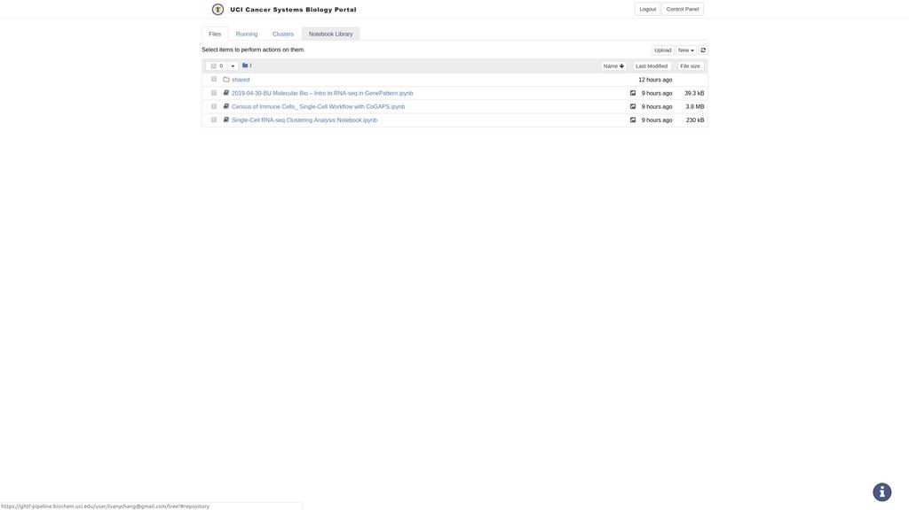
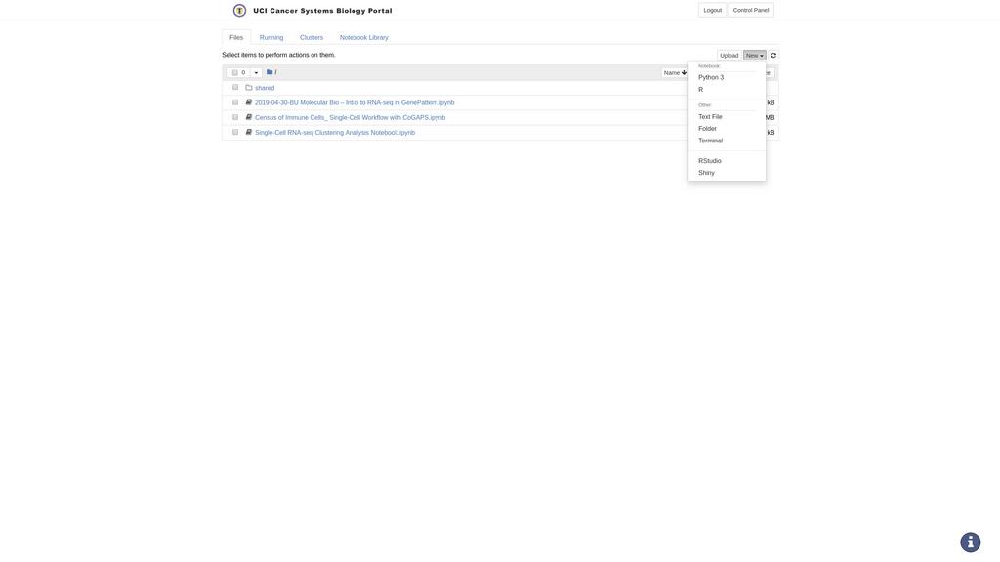

Welcome to the UCI U54 Cancer Systems Biology (CaSB) Center Data Portal! This portal aims to help facilitate data and methods sharing between researchers of the various projects at UCI CaSB. The portal heavily borrows from the Broad Institute's GenePattern Server, GenePattern Notebook and Notebook Repository as its underlying workflow engine and data sharing framework.
This resource is here to help you run your own Single Cell RNAseq analyses through the creation of interactive "notebooks." These notebooks are designed to help you explore, track and reproduce your research, all the way from its conception through its dissemination.
To get started, we recommend beginning with the GenePattern Notebook Tutorial.
The GenePattern Notebook Repository at UCI CaSB provides an variety of public notebooks, which can serve as templates or examples when creating your own. These notebooks can be accessed from the "Notebook Library" tab at the top of this page. (You may need to close this dialog in order to see the tab.)

To open a public notebook, first look through the list and find one that interests you, then click on the notebook's name to open a dialog with the full description. This dialog will have a "Get a Copy" button. If you click this button a copy of the notebook will be made to your workspace. Click the button and then navigate back to the "Files" tab. A copy of the notebook will now be among your files. Simply click the copy to run the notebook and reproduce its contents.
To create your own notebook from scratch, click the "New" dropdown and select either Python or R kernel. In addition, you can start a Rstudio session that will open in a separate tab. Programming knowledge is not required to use GenePattern Notebooks, but its use remains available to you if you are a coder.

This will open a new blank notebook. To begin an analysis that will run on the UCI HPC cluster, select any cell and change the cell type to "GenePattern." For more information, see the GenePattern Notebook Tutorial.